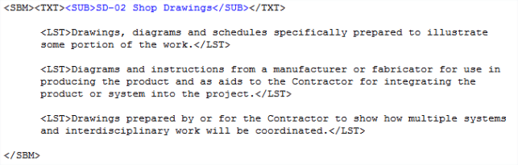
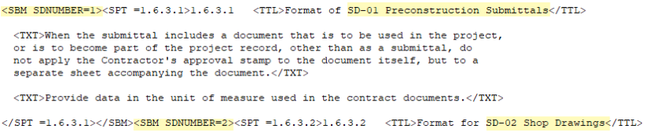

| TAGS |
<SBM> </SBM> |
| DESCRIPTION |
This tag identifies Submittals within the 01 33 00 Submittal Procedures Section only. The SBM tags are used in the 'Definitions' paragraph and surround the Submittal Description number and title. Additionally, the SBM tags containing an attribute are used throughout the Section to surround Subparts that contain Submittal Descriptions. |
| SOURCE |
Insert menu > Tags or by using the keyboard shortcut F4. |
| RULES |
Can only contain text, SPT, TXT, LST, ITM, SUB, OLG, OLI, and NTE tags. |
| CHARACTER LIMITATIONS |
None |
 This tag is not recognized in any other Section. Submittal Descriptions contained within the Definitions Article and paragraphs surrounded by the SBM tag accompanying an attribute will be automatically reconciled during the processing. The attributes are associated with the Submittal Descriptions cited in the Definitions paragraph.
This tag is not recognized in any other Section. Submittal Descriptions contained within the Definitions Article and paragraphs surrounded by the SBM tag accompanying an attribute will be automatically reconciled during the processing. The attributes are associated with the Submittal Descriptions cited in the Definitions paragraph.
 Illustrated below is a Submittal Definition, with tags visible:
Illustrated below is a Submittal Definition, with tags visible:

 Illustrated below is a Submittal Attribute, with tags visible:
Illustrated below is a Submittal Attribute, with tags visible:

 To learn more about inserting tags, refer to the SI Editor's Insert menu > Tags command.
To learn more about inserting tags, refer to the SI Editor's Insert menu > Tags command.
 Watch the SI Editor and Section Structure Overview eLearning module within Chapter 3 - Editing.
Watch the SI Editor and Section Structure Overview eLearning module within Chapter 3 - Editing.
Users are encouraged to visit the SpecsIntact Website's Support & Help Center for access to all of our User Tools, including Web-Based Help (containing Troubleshooting, Frequently Asked Questions (FAQs), Technical Notes, and Known Problems), eLearning Modules (video tutorials), and printable Guides.
| CONTACT US: | ||
| 256.895.5505 | ||
| SpecsIntact@usace.army.mil | ||
| SpecsIntact.wbdg.org | ||